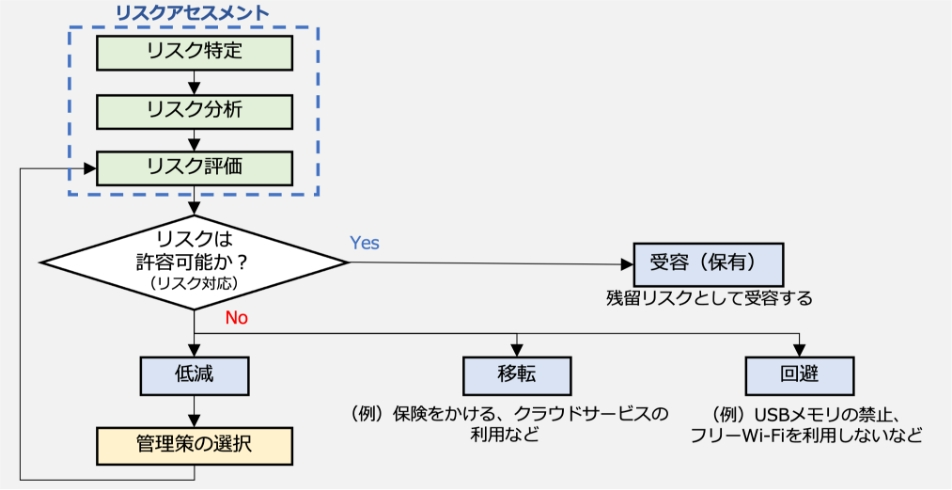

19-2-11. 第11章. リスクマネジメント
- 11-1. リスクマネジメント：概要
- 11-2. リスクマネジメント：リスクアセスメント
- 11-3. リスクマネジメント：リスク対応
章の目的
第11章では、リスクマネジメントの概要と、リスクマネジメントプロセスにおけるリスクアセスメントの手法やリスク対応の考え方を理解することを目的とします。
主な達成目標
- リスクマネジメントの意義について理解すること
- リスクマネジメントプロセスの全体像を理解すること
- リスクアセスメント、リスク対応のプロセスを理解すること
主なキーワード
リスクマネジメント、リスクアセスメント
要旨
11章の全体概要
リスクマネジメントプロセスに沿って、リスク基準の確立、リスクアセスメント、リスク対応について手法なども交えながら解説しています。リスクマネジメントはセキュリティ対策にとって必要ですが、顕在化していないリスクについて考えることが難しい場合もあるでしょう。リスクマネジメントプロセスにおける各段階での考え方や手法を用いることで、円滑なリスク特定、分析と対応策の検討を実施できます。
11-1. リスクマネジメント：概要
-
リスクマネジメントプロセス（ISO 31000）
リスクを効率的に管理し、発生する可能性がある損失を回避、低減するプロセス全体のことを「リスクマネジメント」と言います。リスクマネジメントの国際規格としてISO 31000があります。リスク対応にあたり、リスクマネジメントプロセスにおける「リスクアセスメント」が必須です。リスクアセスメントとは、組織や企業が抱える資産に対するリスクの洗い出しや分析、評価を行い、リスク対応の優先順位付けをしていくプロセスです。 -
情報セキュリティリスクマネジメント（ISO/IEC 27005）
ISO/IEC 27005は、情報セキュリティにおけるリスクマネジメントに関する国際規格です。ISO 31000と整合性があり、情報セキュリティに特化した内容になっています。 -
ISO/IEC 27001におけるリスクマネジメント手順
ISO/IEC 27001はISMSの枠組みを提供し、その中で必要となるリスクマネジメントの具体的な手法やプロセスの詳細を提供しているのが、ISO/IEC 27005です。ISO/IEC 27001の活動は、ISO/IEC 27005におけるリスクマネジメントプロセスと関連付けて整理できます。
11-2. リスクマネジメント：リスクアセスメント
11-3. リスクマネジメント：リスク対応
リスクマネジメント全体の流れは下記の図の通りです。リスクアセスメントでは、組織や企業が抱える資産に対するリスクの洗い出しや分析、評価を行い、リスク基準と比較してリスク対応が必要かどうか判断します。リスク評価の結果をもとに、「低減」、「移転」、「回避」、受容（保有）」からリスク対応を選択します。
図81. リスクマネジメント全体の流れと、リスク対応の選択プロセス
訴求ポイント
章を通した気づき・学び
リスクマネジメントはセキュリティ対策にとって欠かせないものですが、顕在化していないリスクについて考えることが難しい場合もあります。リスクマネジメントプロセスにおける各段階の考え方や手法を用いることで、円滑なリスク特定、分析と対応策の検討を実施できます。
認識していただきたい実施概要
- リスク対応にはリスクマネジメントプロセスにおけるリスクアセスメントが必須であること。
- リスクアセスメントは「リスク特定」、「リスク分析」、「リスク評価」を実施すること。
- リスク対応はリスクアセスメントの結果をもとに「リスク回避」、「リスク低減」、「リスク移転」、「リスク受容」から選択すること。
実践のために参考となる文献（参考文献）